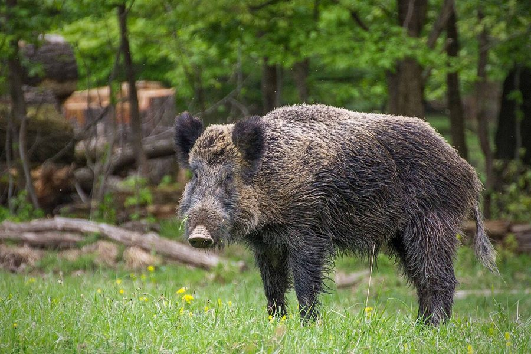

जंगली सूअरWild Boar
Sus scrofa · Suidae · MAM-0007

- Scientific name
- Sus scrofa Linnaeus, 1758
- Family
- Suidae
- Hindi
- जंगली सूअर
- Status here
- native
- IUCN
- LC
When to look कब देखें
Present all year.
जंगली सूअर / Wild Boar
Sus scrofa Linnaeus, 1758 — Suidae
जंगली सूअर — खेतों की सीमाओं, जंगलों और नदियों के किनारे घने सरकंडों में रहने वाला एक अत्यंत मजबूत और शक्तिशाली जंगली स्तनधारी। इसका शरीर भारी और आगे की तरफ झुका हुआ होता है, जो खुरदरे, काले-भूरे सख्त बालों (bristles) से ढका रहता है। इसकी गर्दन और पीठ की रीढ़ पर खड़े होने वाले लंबे बालों की एक कलगी (crest) होती है। नर जंगली सूअर के मुंह से बाहर निकले नुकीले दांत (tusks) इसके सबसे घातक हथियार हैं। यह मिट्टी खोदकर कंद-मूल और कीड़े खाता है। फसलों को नुकसान पहुँचाने के कारण यह किसानों के लिए बड़ी परेशानी है, लेकिन हिंदू पौराणिक कथाओं में इसे भगवान विष्णु के 'वराह अवतार' के रूप में पूजा जाता है।
Quick Identification त्वरित पहचान
| Feature | Description |
|---|---|
| Form | Large, robust build with a heavy forequarter and a sloping rump; legs are relatively thin |
| Coat | Coarse, bristly, dark greyish-brown to black fur; featuring a prominent, erect crest of long bristles along the spine |
| Snout | Long, wedge-shaped, mobile snout ending in a flat cartilaginous disc used for digging |
| Tusks | Lower canine teeth in males are modified into sharp, curved, continuously growing tusks (6–12 cm long) |
| Tracks | Distinct cloven hoofprints with two main central toe marks left in damp mud or riverbeds |
Field tip: A large, dark-colored pig with long, coarse bristles, a sloping back, and an erect mane along its neck and spine. Typically seen foraging in groups (sounders) during dawn, dusk, or at night along forest borders and sugarcane fields.
Morphology आकारिकी
Biometrics (typical measurements for adult cristatus in northern India):
| Measurement | Range |
|---|---|
| Head-body length | 115–160 cm |
| Tail length | 20–30 cm |
| Weight | 50–140 kg |
Fur: Covered in stiff, coarse blackish-brown bristles. The Indian subspecies Sus scrofa cristatus is distinguished by a prominent erectile mane of longer bristles running from the nape of the neck down the spine.
Snout: The head is wedge-shaped with a long, flexible snout terminating in a flat, circular cartilaginous disc, which is supported by a prenasal bone for deep rooting in the soil.
Tusks: The canine teeth are modified into tusks. In adult males, the lower canines are long, sharp, and curve upwards and outwards (6–12 cm long), sliding against the upper canines to maintain a razor-sharp edge. In females, the canines are small and do not protrude.
Limbs: Relatively short and strong, ending in cloven hooves with four digits, though only the two larger middle toes touch the ground.
Ecological Role पारिस्थितिक भूमिका
Soil bioturbator. By using its strong snout to dig up the soil in search of roots, tubers, and insect grubs, the wild boar mixes organic matter and aerates the topsoil. This digging activity facilitates water infiltration and exposes buried seeds, promoting forest and grassland regeneration.
Omnivorous scavenger. Wild boars consume carrion, fallen fruits, seeds, and small vertebrates, recycling nutrients and helping clean the ecosystem. However, they are also significant seed predators of forest trees.
Life Cycle / Phenology जीवन चक्र
- Social groups: Females and young live in social maternal groups called sounders (ranging from 6 to 30 individuals). Adult males are solitary, joining the troops only during the mating season.
- Breeding: Mating peaks in winter (December–March).
- Nesting: The pregnant female builds a nest of grass, leaves, and twigs in dense bush cover.
- Birth: After a gestation period of ~115 days, a litter of 4 to 8 piglets is born.
- Piglet markings: Piglets are born with distinct light brown and cream longitudinal stripes on their body, which serve as camouflage in the undergrowth. These stripes fade by 6 months.
Host Plants or Prey आहार
Primary food items:
- Roots and tubers of wild grasses (Saccharum munja, Cynodon dactylon) and forest plants.
- Agricultural crops: Sugarcane (Saccharum officinarum, FLR-0034), potato tubers, maize, and paddy (Oryza sativa).
- Fallen forest fruits: Mango (Mangifera indica), Mahua flowers (Madhuca longifolia), and Amla fruits (Phyllanthus emblica).
- Soil macro-invertebrates: Earthworms, beetle grubs, and pupae.
- Occasional carrion and small ground-nesting bird eggs.
Predators / Natural Enemies शत्रु
- Leopards — Prey on young and sub-adult boars.
- Marsh Crocodiles — Ambush boars drinking at riverbanks.
- Feral Dogs — Pack-hunt piglets and young sub-adults near village borders.
- Humans — Hunted for meat and targeted during crop protection.
Agricultural / Human Relevance कृषि प्रासंगिकता
Agricultural conflict. Wild boars are among the most destructive crop-raiders in Basti district. They dig up potato fields, pull down and chew sugarcane stalks, and trample paddy fields. A single sounder can devastate an entire field in a single night.
Attack hazard. Wild boars can be highly dangerous. If cornered, wounded, or when a sow is protecting her piglets, they can charge with immense speed. The sharp, upward-pointing tusks of males can cause deep, severe lacerations to the legs of farmers.
Cultural significance. In Hindu mythology, Varaha (वराह), the wild boar, is the third avatar of Lord Vishnu, who took this form to defeat the demon Hiranyaksha and lift the Earth (Bhudevi) out of the cosmic ocean on his tusks. The boar is also associated with Varahi, one of the Matrikas.
Expected Locally स्थानीय रूप से अपेक्षित
Not a field record. Written from published accounts for eastern Uttar Pradesh. No confirmed local sighting yet — if you have seen it, that is what the atlas needs.
अभी तक स्थानीय पुष्टि नहीं। यह विवरण प्रकाशित स्रोतों से है, किसी अवलोकन से नहीं।
Commonly found in the floodplains of the Ghaghara and Kuwano rivers in Basti district, where dense stands of Saccharum munja (Munj grass) provide ideal breeding and hiding cover. At night, they venture into adjacent crop fields, requiring farmers to guard their fields from elevated wooden platforms (machan).
Distribution वितरण
Global range: Native across Eurasia and North Africa, from Western Europe to Japan and Southeast Asia; widely introduced globally (Americas, Australia) where it is often invasive.
In India: Distributed throughout the country, occupying deciduous forests, scrub jungles, grasslands, and agricultural plains.
In Uttar Pradesh: Common in all districts, particularly dense along river channels and canal banks.
In Basti district / eastern UP: Widespread in all rural blocks, particularly adjacent to major river beds.
Range notes: No significant range changes documented.
Research Questions शोध प्रश्न
Anyone can investigate these | कोई भी इन प्रश्नों की जाँच कर सकता है
- What is the average damage area (in square metres) caused by a single night's wild boar raid in a local potato field? / एक स्थानीय आलू के खेत में एक रात में जंगली सूअर के हमले से होने वाले नुकसान का औसत क्षेत्रफल (वर्ग मीटर में) कितना होता है? — Map and measure damaged patches after a raid.
- Do wild boars prefer foraging in sugarcane fields over open paddy fields during the late monsoon? / क्या जंगली सूअर मानसून के अंत में धान के खेतों की तुलना में गन्ने के खेतों में भोजन खोजना अधिक पसंद करते हैं? — Record crop raid frequencies in adjacent plots.
- What is the typical composition of plants used by wild boars to build farrowing nests in Basti? — Inspect abandoned nests and list plant species.
- How do farmers in your village traditionally repel wild boars without using toxic chemicals? / आपके गाँव के किसान बिना किसी जहरीले रसायन के जंगली सूअरों को भगाने के लिए पारंपरिक रूप से किन तरीकों का उपयोग करते हैं? — Document local deterrents (solar fencing, sounds, colored ribbons).
- How does the soil organic carbon content compare between freshly rooted wild boar patches and undisturbed soil? — Collect and test soil samples from both sites.
Similar Species मिलती-जुलती प्रजातियाँ
| Species | How to tell apart | हिंदी |
|---|---|---|
| Domestic Pig (Sus scrofa domesticus) | Hair is much sparser and softer; back is less sloping; ears are often drooping; lacks the thick, erect dorsal crest | पालतू सूअर — कम बाल, झुके हुए कान |
| Indian Porcupine (Hystrix indica) | Much smaller rodent; body is covered in long, sharp black-and-white quills rather than coarse hair | साही — कांटों वाला छोटा स्तनधारी |
Field rule: Stocky build with a sloping back, covered in coarse dark bristles, with a prominent erectile mane along the spine, and sharp tusks in males, identifies Sus scrofa.
Taxonomy & Classification वर्गीकरण
Original description. Carl Linnaeus described the Wild Boar as Sus scrofa in 1758 in his work Systema Naturae, 10th edition (Vol. 1, p. 49). The type locality is Germany. The genus name Sus is Latin for pig. The specific name scrofa is Latin for a breeding sow.
Subspecies. Numerous subspecies are recognized, with the Indian Wild Boar occurring in Uttar Pradesh:
- Sus scrofa cristatus Wagner, 1839 — UP subspecies; characterized by a prominent dorsal mane and a lack of underwool.
Family and order placement. Placed in the order Artiodactyla (even-toed ungulates), suborder Suina, family Suidae. Suidae is characterized by simple stomachs, flat snouts, and canine tusks.
Phylogenetic notes. Sus scrofa is the wild ancestor of the domestic pig (Sus scrofa domesticus). It split from other Southeast Asian Sus species in the Early Pleistocene.
IUCN status rationale. Listed as Least Concern (LC). The species has an extremely large global distribution, high reproductive rates, and is highly adaptable to human-dominated agricultural landscapes.
Photo Gallery फोटो गैलरी
References संदर्भ
- Linnaeus, C. (1758). Systema Naturae per regna tria naturae. Editio Decima, Reformata. Laurentii Salvii, Holmiae, p. 49.
- Prater, S.H. (1971). The Book of Indian Animals. Bombay Natural History Society, Mumbai.
- Wagner, J.A. (1839). Über die in Indien vorkommenden Arten की Gattung Sus. Münchner Gelehrte Anzeigen, 9, 433–440.
- Groves, C.P. (1981). Ancestors for the Pigs: Taxonomy and phylogeny of the genus Sus. Technical Bulletin, Department of Prehistory, Australian National University, 3, 1–96.
- Zoological Survey of India (ZSI) — Mammal Fauna of Uttar Pradesh.
- GBIF Occurrence Data — Sus scrofa, Uttar Pradesh (2010–2025).
Source file: species/fauna/mammals/wild_boar.md